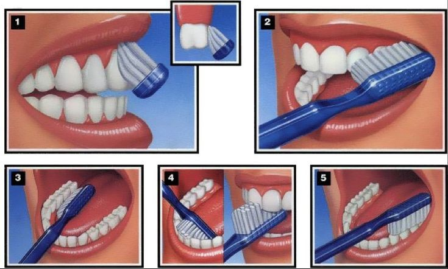

🦷 لماذا يعود ألم الأسنان بعد الحشو؟

يعتقد كثير من المرضى أن حشو السن يعني انتهاء المشكلة تمامًا، لكن في بعض الحالات قد يعود الألم. فما السبب؟
🔎 أسباب شائعة لعودة الألم:
- تسوس عميق: قرب التسوس من العصب يجعل السن حساساً بعد الحشو.
- ارتفاع الحشو: حتى فرق بسيط يسبب ضغطاً مؤلماً أثناء المضغ.
- التهاب العصب: إذا كان العصب ملتهباً بالفعل، قد يحتاج السن لعلاج عصب.
✨ في مركزنا نستخدم وسائل تشخيص حديثة لتحديد السبب الحقيقي وتقديم العلاج الأمثل.
← العودة للرئيسية